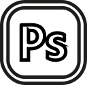

Les plus populaires
Voici les outils qui dans notre sondage se sont avérés les populaires dans leur domaine.
-
 BrainstormingPapier & Post-its
BrainstormingPapier & Post-its -
WireframingPapier
-

Design d’interfacePhotoshop
-
 PrototypageHTML / CSS
PrototypageHTML / CSS -
 Édition de codeSublime Text
Édition de codeSublime Text -
 CMS/frameworksWordPress
CMS/frameworksWordPress -
Gestion de versionGithub
-
 Systèmes de designSketch
Systèmes de designSketch -
 CommunicationSlack
CommunicationSlack